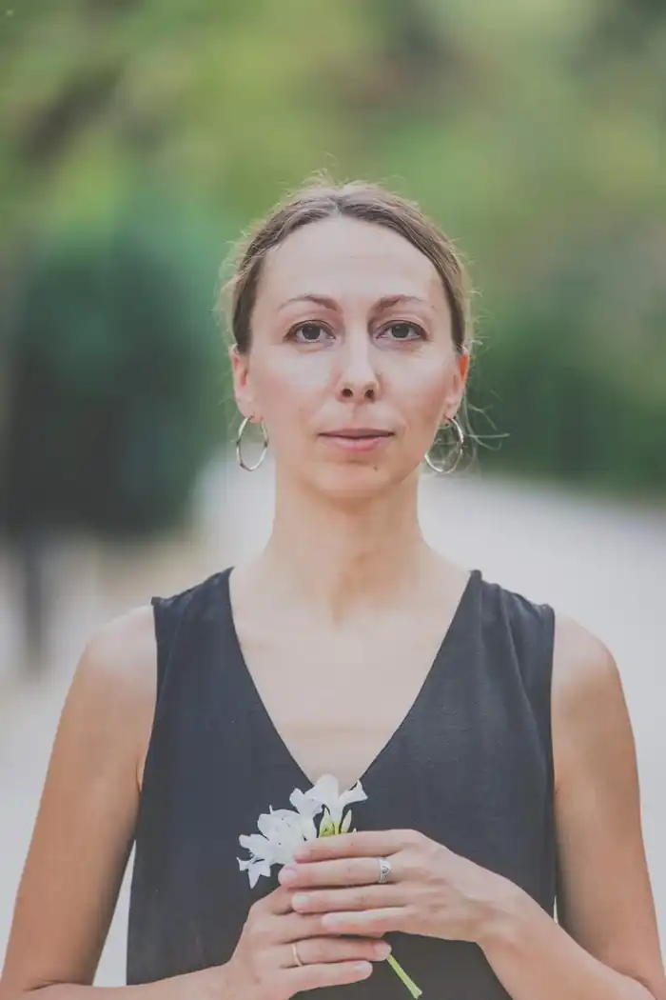

Наталія Довгопол — сучасна українська письменниця, працює в жанрі фантастики та історичної прози. Пише книжки для дорослих, young adult та молодших підлітків.
Авторка народилася 28 лютого 1987 року у Броварах на Київщині. П'ять років провчилася за фахом "Туризм" в Національному авіаційному університеті, а згодом закінчила аспірантуру Національної академії керівних кадрів культури та мистецтва, де вивчала "Теорію та історію мистецтв".
Наталія Довгопол почала писати в дошкільному віці, перші публікації творів з'явилися в середній школі. У 2003 році її повість було відзначено спецвідзнакою Міжнародного конкурсу-фестивалю дитячої та юнацької журналістики "Прес-Весна на Дніпрових схилах". Кілька повістей було видано в електронному форматі, опубліковано у журналах "Планета легенд" та "Дніпро". Із 2018 року мешкає з чоловіком-греком у Афінах, де окрім написання книг займається громадською роботою. Зокрема, є активною членкинею Товариства підтримки та розвитку культурної спадщини "Трембіта", працює в Інфоцентрі Об'єднаної української діаспори в Греції. Свій перший виданий друком роман "Шпигунки з притулку "Артеміда"" письменниця написала за один місяць та подала на конкурс "Коронація слова — 2019". Твір отримав ІІ премію у категорії "Романи", у 2019 вийшов у видавництві "Vivat" та здобув низку літературних відзнак. Романи: 2019 — Шпигунки з притулку "Артеміда" 2019 — Прокляте небо 2021 — Мандрівний цирк сріблястої пані 2021 — Шпигунки з притулку "Артеміда". Колапс старого світу 2022 — Знайти країну амазонок Повісті: 2018 — Три хрестики Аліє 2018 — Дарована весна, або Відьма за чужим призначенням 2018 — Карпатська казка, або За десять днів до Купала 2021 — Куба-якої-не-було 2021 — Привиди готелю "Едельвейс"